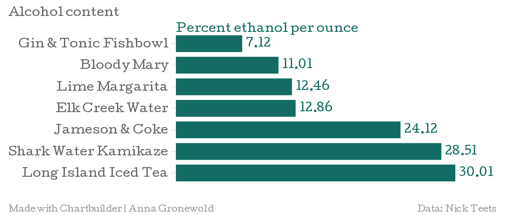

You haven’t heard from Corey in a week. No one says anything aloud, but you can see the pity in your DG sisters’ eyes: He’s just not that into you. There are several ways to cope with tragedy, but being the rational girl you are, you choose the most tried and tested: O Street.
“After a Fuzzy’s margarita I never remember anything,” your roommate assures you.
You slip on a sequin-encrusted skirt, slather your eyelids in something black and glittery and tuck $20 in your purse. It’s time.
Rumors trickle among UNL students about the most toxic drink specials downtown. Each newly minted 21-year-old eventually slurps a fishbowl from Duffy’s Tavern, and many a mistake has been blamed on pitchers of Elk Creek Water at Sandy’s Lounge. But reputation doesn’t always reflect reality. Sometimes these concoctions contain more alcohol than a regular cocktail, and sometimes they have very little alcohol at all. How can college students turn their pain into champagne without purchasing dozens of individual drinks?
| Place | Drink | Volume |
|---|---|---|
| Fuzzy's Taco Shop | Lime Margarita | 20 oz |
| Jake's Cigars and Spirits | Jameson and Coke | 12 oz |
| Duffy's Tavern | Gin and Tonic Fishbowl | 64 oz |
| Sandy's | Elk Creek Water | 60 oz |
| O'Rourke's Tavern | Bloody Mary | 16 oz |
| Cliff's Lounge | Shark Water Kamikaze | 16 oz |
| Tam O'Shanter | Long Island Iced Tea | 18 oz |
A senior chemistry major tested seven drink specials in Lincoln’s favorite downtown bars for alcohol content per ounce. He collected one-ounce samples from each drink immediately after it was served and diluted each sample with an ice cube to account for liquid from melted ice.
Lime Margarita
Jameson and Coke
Fishbowl
Elk Creek Water
Bloody Mary
Kamikaze
Long Island Iced Tea
Mixers disguise actual alcohol content in shared drinks like Duffy's gin and tonic fishbowl, which came in at only 7.12 percent alcohol. Fuzzy’s lime margarita had about half of the alcohol content of Jake’s Jameson and Coke.
| Place | Drink | Volume |
|---|---|---|
| Duffy's Tavern | Gin and Tonic Fishbowl | 7.12% |
| O'Rourke's Tavern | Bloody Mary | 11.01% |
| Fuzzy's Taco Shop | Lime Margarita | 12.46% |
| Sandy's | Elk Creek Water | 12.86% |
| Jake's Cigars and Spirits | Jameson and Coke | 24.12% |
| Cliff's Lounge | Shark Water Kamikaze | 28.51% |
| Tam O'Shanter | Long Island Iced Tea | 30.01% |
Bartenders at Tom O’Shanters won’t serve more than a couple Long Island Iced Teas to a single customer, for obvious reasons. And at about $7 a drink, Long Island Iced Teas and Kamikazes are priced relative to their alcohol content. The next most-alcoholic beverage was Jake’s Jameson and Coke. For a drink with such low volume, the alcohol content was quite high, making this $4 drink the most cost efficient. Next time you want to forget your sorrows to the beat of a O Street's persistent washboard performer, skip the fishbowls and head to Jake's.